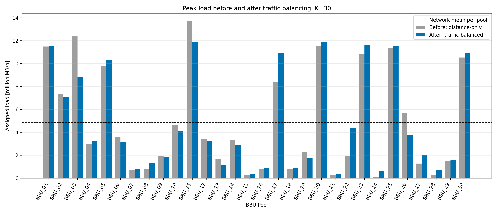
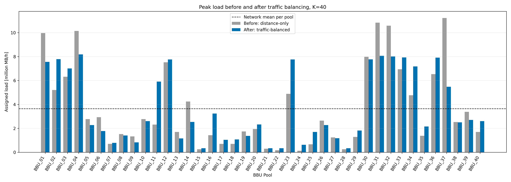
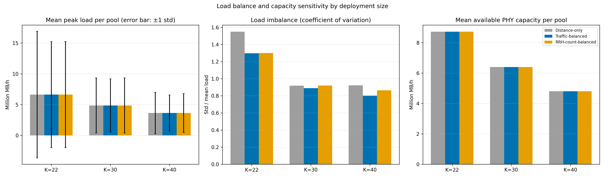
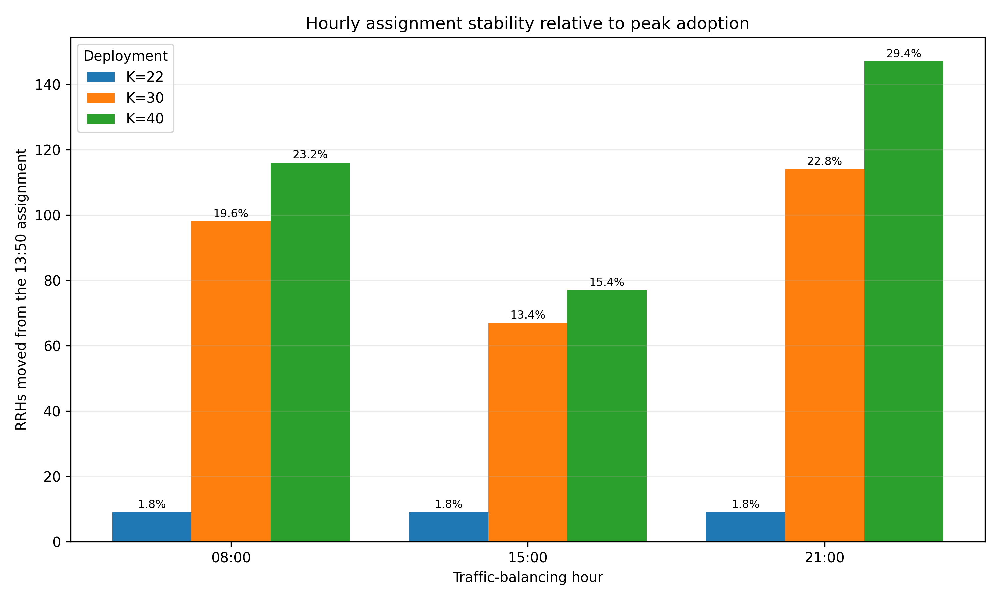
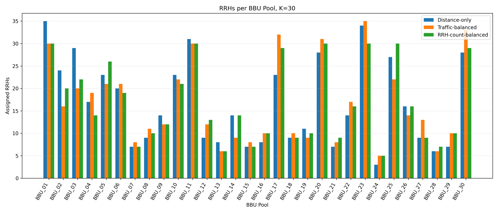
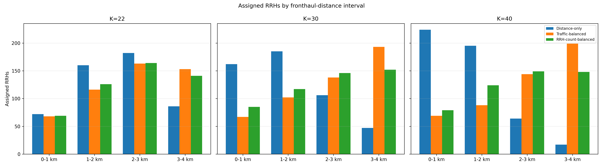
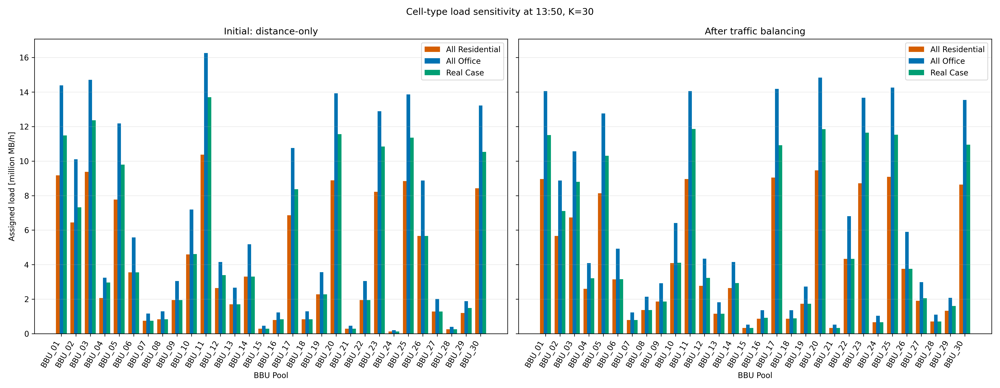

Resumen ejecutivo
El balanceo por tráfico redistribuye RRH entre BBU Pools físicamente alcanzables para reducir la concentración de carga en los pools más exigidos. En los tres despliegues analizados, reduce la carga máxima del pool respecto a la asignación inicial por distancia.
0. Qué se ha usado: algoritmo, datos y horas
El análisis parte de 500 RRH y de las alternativas de conexión calculadas en la fase anterior. Para respetar la restricción física, cada RRH solo puede asignarse a un BBU Pool situado a una distancia máxima de 4 km. Se comparan tres criterios: mantener la asignación inicial basada en distancia, balancear según el tráfico o balancear según el número de RRH conectadas a cada pool. Los despliegues evaluados tienen 22, 30 y 40 pools.
El balanceo por tráfico utiliza una heurística secuencial, conocida como greedy. Primero asigna las RRH que solo tienen una conexión posible, pues no pueden elegir otro pool. Después ordena las RRH restantes empezando por aquellas con menos alternativas. Para cada una, elige entre sus pools factibles el que tenga menos carga acumulada en ese momento y añade su carga al total antes de pasar a la siguiente. Así, cada decisión tiene en cuenta las asignaciones ya realizadas, aunque el procedimiento no busca una solución óptima global. Como referencia, el balanceo por número de RRH sigue el mismo principio, pero elige el pool con menos antenas asignadas en vez de comparar el tráfico.
Las capacidades máximas físicas se calcularon con las fórmulas acordadas y se utilizaron para desnormalizar el tráfico. Para 4G se asumieron 100 bloques de recursos, eficiencia CQI de 5,5547, una sobrecarga LTE del 21,75714% y MIMO 2×2; el resultado es una capacidad máxima de 146,030841 Mbps, equivalente a 65.713,878504 MB/h. Para 5G se usaron 273 PRB, numerología 1, orden de modulación 8, tasa máxima 948/1024, un 75% de recursos de bajada, sobrecarga del 14% y cuatro capas MIMO; resulta en 1.752,750090 Mbps, o 788.737,540500 MB/h. En el escenario analizado, 280 RRH usan la capacidad 4G y 220 usan la capacidad 5G.
Los perfiles normalizados de Residential, Office y Mixed representan el día laborable medio mediante muestras cada diez minutos. Se suman los tres perfiles y se identifica la muestra con el valor máximo; así se determina automáticamente la hora pico de 13:50. Este paso sirve para encontrar el momento de evaluación, no para calcular directamente la carga de los pools.
La carga efectiva de cada muestra se obtiene multiplicando el valor normalizado del perfil de tráfico de la RRH por su capacidad máxima en MB/h. Por tanto, en la carga usada por el balanceador sí se han aplicado esas capacidades; no se asigna a todas las RRH una misma capacidad. Se generaron 504.000 muestras horarias y la comprobación del producto coincide con los valores guardados salvo el redondeo a seis decimales. En cada hora analizada se promedian los valores de lunes a viernes, sin incluir sábado ni domingo. La asignación principal usa las cargas promedio de las 13:50; para estudiar la sensibilidad temporal, el balanceo por tráfico se repite a las 08:00, 15:00 y 21:00 y se compara con el resultado de la hora pico.
1. Objetivo y datos de entrada
La Fase 1 sitúa los BBU Pools y calcula, para cada RRH, qué pools son candidatos y a qué distancia. S3 mantiene esa factibilidad física y compara tres formas de asignar las 500 RRH:
- Solo distancia: conserva la asignación inicial de Fase 1.
- Balanceo por tráfico: asigna las RRH flexibles según la carga acumulada en cada pool.
- Balanceo por número de RRH: busca repartir el número de antenas por pool; sirve como referencia, pero no necesariamente equilibra el tráfico.
La carga de cada RRH se obtiene promediando sus muestras de lunes a viernes para la hora evaluada. El pico se detecta automáticamente a partir de los perfiles normalizados de días laborables y resulta ser 13:50. El total de carga de la red en ese instante es 145,58 millones de MB/h; se conserva entre los métodos porque solo cambia la asignación, no la carga de las RRH.
2. Cómo funciona el algoritmo de S3
- Asignaciones obligatorias: las RRH con un único BBU Pool factible se fijan primero a ese pool. Su tráfico y su número de RRH se incorporan a los totales iniciales.
- Orden de las RRH restantes: se procesan primero las RRH con menos pools candidatos. En el balanceo por tráfico, los empates se ordenan además por distancia mínima.
- Decisión greedy para tráfico: para cada RRH se elige, entre sus candidatos, el pool con menor carga acumulada en ese momento; en empate, se prefiere la menor distancia. Su carga se suma antes de asignar la RRH siguiente.
- Decisión por cantidad: se reinicia el estado tras las asignaciones obligatorias y cada RRH flexible se dirige al pool con menos RRH asignadas; los empates se resuelven por distancia.
- Sensibilidad horaria: se repite el balanceo por tráfico con las cargas promedio de las 08:00, 15:00 y 21:00, y se compara con la asignación de hora pico.
3. Resultados principales a la hora pico
Las cargas están expresadas en millones de MB/h (M MB/h). La desviación estándar y el coeficiente de variación (CV) describen la dispersión de la carga entre pools: cuanto menores, más uniforme es el reparto. La carga media es igual para los tres métodos dentro de cada K porque la carga total de red se mantiene.
| Pools (K) | Método | Carga máx. (M MB/h) | Carga media (M MB/h) | Desv. estándar (M MB/h) | CV | Distancia media (km) |
|---|---|---|---|---|---|---|
| 22 | Solo distancia | 43,47 | 6,62 | 10,26 | 1,550 | 2,059 |
| 22 | Balanceo por tráfico | 29,55 | 6,62 | 8,58 | 1,297 | 2,308 |
| 22 | Balanceo por nº de RRH | 29,48 | 6,62 | 8,60 | 1,300 | 2,264 |
| 30 | Solo distancia | 13,70 | 4,85 | 4,46 | 0,918 | 1,541 |
| 30 | Balanceo por tráfico | 11,86 | 4,85 | 4,31 | 0,889 | 2,426 |
| 30 | Balanceo por nº de RRH | 13,98 | 4,85 | 4,46 | 0,919 | 2,225 |
| 40 | Solo distancia | 11,23 | 3,64 | 3,36 | 0,923 | 1,213 |
| 40 | Balanceo por tráfico | 8,19 | 3,64 | 2,92 | 0,802 | 2,456 |
| 40 | Balanceo por nº de RRH | 10,01 | 3,64 | 3,14 | 0,864 | 2,247 |
| K | Reducción de carga máxima | Reducción del CV | Aumento de distancia media |
|---|---|---|---|
| 22 | 32,0% | 16,3% | 0,249 km |
| 30 | 13,4% | 3,2% | 0,886 km |
| 40 | 27,1% | 13,0% | 1,243 km |
El balanceo por nº de RRH muestra por qué repartir antenas no equivale a repartir tráfico: en K=30 su pool más cargado alcanza 13,98 M MB/h, ligeramente por encima de los 13,70 M MB/h de la asignación por distancia.



4. Sensibilidad a la hora de asignación
La tabla indica cuántas RRH cambiarían de pool si se recalculara el balanceo a otra hora, respecto a la asignación de tráfico obtenida a las 13:50. El porcentaje se calcula sobre las 500 RRH.
| K | 08:00 | 15:00 | 21:00 |
|---|---|---|---|
| 22 | 9 (1,8%) | 9 (1,8%) | 9 (1,8%) |
| 30 | 98 (19,6%) | 67 (13,4%) | 114 (22,8%) |
| 40 | 116 (23,2%) | 77 (15,4%) | 147 (29,4%) |

En K=22 el reparto horario es muy estable en estas muestras. Con K=30 y K=40, entre el 13,4% y el 29,4% de las RRH cambia de pool, lo que refleja que hay más alternativas factibles y que el orden relativo de las cargas varía durante el día.
5. Cómo interpretar el resultado
- El efecto del tráfico sí se ve en la carga: el pool más cargado baja en K=22, K=30 y K=40; también disminuye la desviación estándar en los tres casos.
- No se pierde ni se crea carga: cada asignación contiene 500 RRH y mantiene el total de red de 145,58 M MB/h; únicamente cambia a qué pool se atribuye cada carga.
- Equilibrar tiene un coste de distancia: el algoritmo usa parte del margen físico disponible y aumenta la distancia media. En todos los casos los enlaces seleccionados permanecen dentro de 4 km.
- Más pools no implica automáticamente un reparto perfecto: la posición de los pools y las opciones físicas de cada RRH también limitan el resultado.
- La asignación es horaria: si se adopta una asignación basada en un periodo distinto del pico, el resultado puede cambiar, sobre todo con K=30 y K=40.
6. Otras figuras y datos
El directorio de comparación incluye además el reparto de RRH por pool, la distribución por intervalos de distancia y la sensibilidad por tipo de celda. Las figuras son PNG de alta resolución y las tablas CSV se pueden abrir con hojas de cálculo.



Archivos resumen: métricas de despliegue, cambios horarios, RRH por pool y intervalos de distancia.